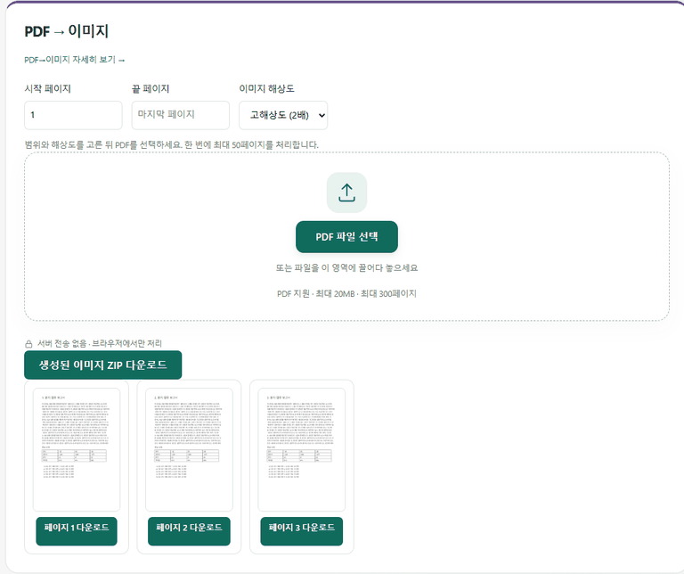

IMAGE TOOLBOX / GUIDE
PDF를 이미지로 변환하는 방법
설치나 회원가입 없이, 브라우저에서 바로 PDF 페이지를 이미지로 뽑아낼 수 있습니다.
PDF 한 페이지를 그림으로 써야 할 때
PDF 자료의 표 한 장을 발표 자료에 붙이거나, PDF를 열 수 없는 메신저에 미리보기로 보내거나, 블로그에 문서 일부를 이미지로 올려야 할 때가 있습니다. PDF→이미지 기능은 PDF의 각 페이지를 PNG 이미지로 바꿔 줍니다. 파일은 최대 20MB·300페이지까지 받고, 한 번에 50페이지씩 처리합니다.
사용 방법: 범위와 해상도를 먼저 고르세요
1. 페이지 범위. 시작 페이지와 끝 페이지를 정합니다. 끝 페이지를 비워 두면 마지막 페이지까지 바꾸되, 한 번에 최대 50페이지씩 처리합니다.
2. 해상도. "기본(1배)"과 "고해상도(2배)" 중에서 고릅니다. 둘의 차이는 아래 측정 결과를 보고 정하는 게 좋습니다.
3. PDF 선택 → 다운로드. 변환이 끝나면 페이지마다 "페이지 N 다운로드" 버튼이 생기고, 전체를 한 번에 받는 "생성된 이미지 ZIP 다운로드" 버튼도 함께 나타납니다.

1배와 2배, 실제로 얼마나 다를까
A4 크기의 글자 보고서, 가로형 발표 자료, 스캔 문서를 두 해상도로 각각 바꿔 봤습니다(값은 한 페이지 기준).
| PDF 종류 | 기본(1배) | 고해상도(2배) |
|---|---|---|
| 글자 보고서(A4) | 595×841px · 89.0KB | 1190×1683px · 214.3KB |
| 발표 자료(가로) | 841×595px · 177.1KB | 1683×1190px · 676.7KB |
| 스캔 문서(A4) | 595×841px · 668.4KB | 1190×1683px · 2.3MB |
기본(1배)은 A4 한 페이지가 가로 595픽셀이 되는데, 이는 인쇄 기준으로 72dpi 정도라서 본문 크기 글자는 확대하면 뭉개집니다. 메신저 미리보기용이라면 1배로 충분하지만, 글자를 읽어야 하거나 발표 자료에 넣을 거라면 2배를 고르세요. 2배도 144dpi 정도라서 인쇄용으로는 부족하다는 점은 알아두면 좋습니다.
처리 시간은 3~4페이지 기준으로 1초 안팎이었고, 스캔 문서처럼 그림이 많은 PDF가 3초 정도로 가장 오래 걸렸습니다. 결과는 항상 PNG라서 스캔 문서는 용량이 꽤 큽니다. 2배로 바꾼 스캔 페이지 한 장이 2.3MB였습니다.
측정에 쓴 파일은 직접 만든 테스트 PDF입니다. 글꼴과 그림 양에 따라 실제 PDF의 결과 용량은 달라질 수 있습니다.
이미지로 바꾸면 사라지는 것
PNG는 그림 파일이라서 원래 PDF에 있던 글자를 검색하거나 복사할 수 없게 됩니다. 글자를 살려서 옮기고 싶다면 PDF→Word 변환이 맞고, PDF끼리 이어 붙이는 게 목적이라면 이미지를 거치지 말고 PDF 합치기를 쓰는 게 화질과 글자를 모두 지킵니다.
자주 묻는 질문
여러 페이지를 ZIP 파일 하나로 받을 수 있나요?
네. 변환이 끝나면 "생성된 이미지 ZIP 다운로드" 버튼이 나타나 전체 페이지를 한 번에 받을 수 있습니다. 필요한 페이지만 하나씩 받는 것도 됩니다.
어떤 이미지 형식으로 변환되나요?
PNG로 변환됩니다. 용량을 줄이려면 받은 PNG를 이미지 압축 도구에 넣어 JPG나 WebP로 바꾸면 됩니다.
기본(1배)과 고해상도(2배) 중 무엇을 골라야 하나요?
미리보기 공유는 1배로 충분합니다. 1배는 A4 한 페이지가 가로 595픽셀이라 작은 글씨가 흐려지므로, 글자를 읽어야 하거나 발표 자료에 넣을 때는 2배(가로 1190픽셀)를 권장합니다.
페이지가 많은 PDF는 어떻게 하나요?
한 번에 50페이지까지 처리합니다. 시작·끝 페이지를 1~50, 51~100처럼 나눠서 여러 번 변환하면 됩니다. 파일은 최대 20MB·300페이지까지 받습니다.
이미지로 바꾸면 글자를 검색할 수 없나요?
맞습니다. 변환된 PNG는 그림이라 글자 검색·복사가 되지 않습니다. 글자를 살리려면 PDF→Word 변환을 쓰세요.
PDF가 서버에 업로드되나요?
아니요. 페이지를 이미지로 그리는 작업은 브라우저 안에서 이뤄지며 PDF를 서버로 보내지 않습니다.